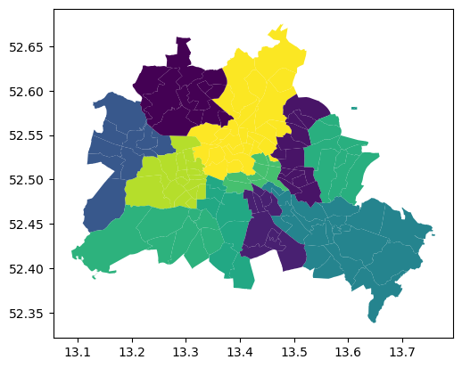
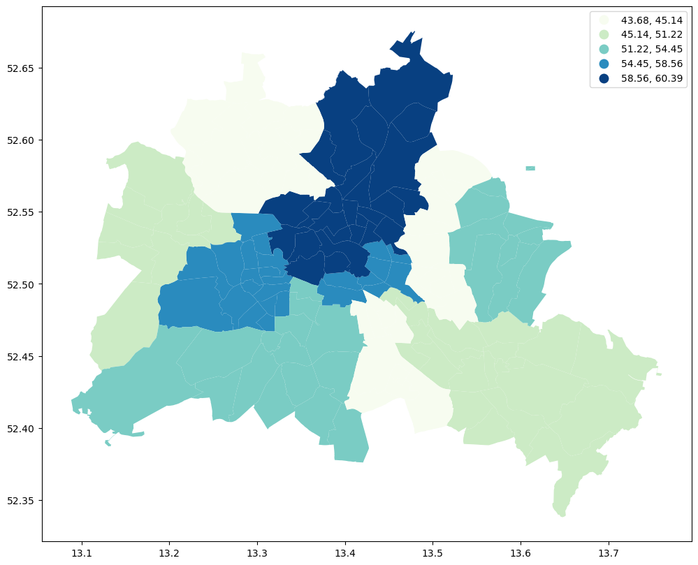
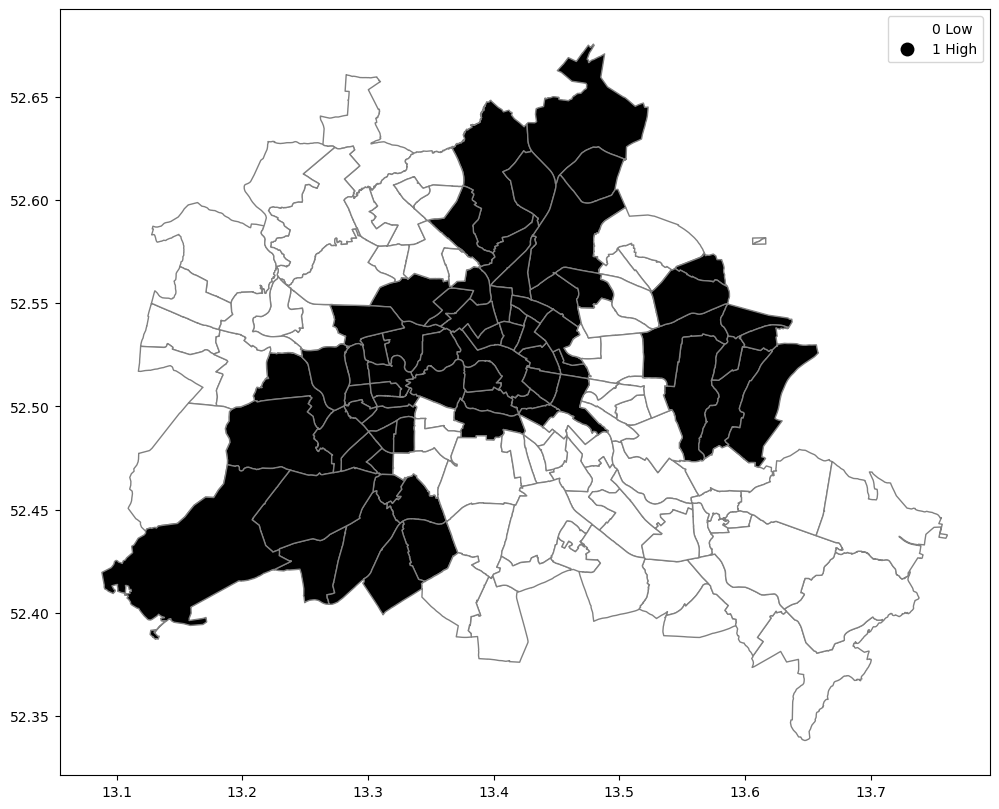
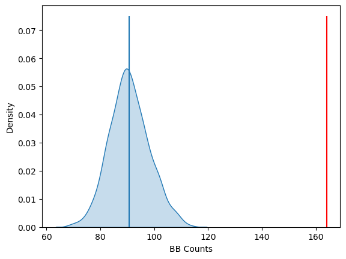

Global Spatial Autocorrelation with Join Counts¶
This notebook focuses on global spatial autocorrelation for a binary attribute using Join Counts.
Learning goals¶
By the end of this notebook, you will be able to:
convert a continuous variable into a binary outcome for categorical spatial analysis
understand what a join count measures on a binary spatial lattice
distinguish BB, WW, and BW joins
use permutation inference to assess whether similar categories cluster in space
Join counts are appropriate when the variable of interest is binary rather than continuous.
import geopandas as gpd
import libpysal as lps
import matplotlib.pyplot as plt
import numpy as np
import pandas as pd
import esda
Our data set comes from the Berlin airbnb scrape taken in April 2018. This dataframe was constructed as part of the GeoPython 2018 workshop by Levi Wolf and Serge Rey. As part of the workshop a geopandas data frame was constructed with one of the columns reporting the median listing price of units in each neighborhood in Berlin:
Data preparation¶
As in the Moran’s \(I\) notebook, we build neighborhood-level median Airbnb prices. We then convert that continuous measure into a binary indicator based on whether a neighborhood is above or below the median price.
gdf = gpd.read_file("data/berlin-neighbourhoods.geojson")
bl_df = pd.read_csv("data/berlin-listings.csv")
geometry = gpd.points_from_xy(x=bl_df.longitude, y=bl_df.latitude, crs="epsg:4326")
bl_gdf = gpd.GeoDataFrame(bl_df, geometry=geometry)
bl_gdf["price"] = bl_gdf["price"].astype("float32")
sj_gdf = gpd.sjoin(
gdf, bl_gdf, how="inner", predicate="intersects", lsuffix="left", rsuffix="right"
)
median_price_gb = sj_gdf["price"].groupby([sj_gdf["neighbourhood_group"]]).mean()
median_price_gb
neighbourhood_group
Charlottenburg-Wilm. 58.556408
Friedrichshain-Kreuzberg 55.492809
Lichtenberg 44.584270
Marzahn - Hellersdorf 54.246754
Mitte 60.387890
Neukölln 45.135948
Pankow 60.282516
Reinickendorf 43.682465
Spandau 48.236561
Steglitz - Zehlendorf 54.445683
Tempelhof - Schöneberg 53.704407
Treptow - Köpenick 51.222004
Name: price, dtype: float32
gdf = gdf.join(median_price_gb, on="neighbourhood_group")
gdf.rename(columns={"price": "median_pri"}, inplace=True)
gdf.head(15)
| neighbourhood | neighbourhood_group | geometry | median_pri | |
|---|---|---|---|---|
| 0 | Blankenfelde/Niederschönhausen | Pankow | MULTIPOLYGON (((13.41191 52.61487, 13.41183 52... | 60.282516 |
| 1 | Helmholtzplatz | Pankow | MULTIPOLYGON (((13.41405 52.54929, 13.41422 52... | 60.282516 |
| 2 | Wiesbadener Straße | Charlottenburg-Wilm. | MULTIPOLYGON (((13.30748 52.46788, 13.30743 52... | 58.556408 |
| 3 | Schmöckwitz/Karolinenhof/Rauchfangswerder | Treptow - Köpenick | MULTIPOLYGON (((13.70973 52.3963, 13.70926 52.... | 51.222004 |
| 4 | Müggelheim | Treptow - Köpenick | MULTIPOLYGON (((13.73762 52.4085, 13.73773 52.... | 51.222004 |
| 5 | Biesdorf | Marzahn - Hellersdorf | MULTIPOLYGON (((13.56643 52.5351, 13.56697 52.... | 54.246754 |
| 6 | Nord 1 | Reinickendorf | MULTIPOLYGON (((13.33669 52.62265, 13.33663 52... | 43.682465 |
| 7 | West 5 | Reinickendorf | MULTIPOLYGON (((13.28138 52.59958, 13.28158 52... | 43.682465 |
| 8 | Frankfurter Allee Nord | Friedrichshain-Kreuzberg | MULTIPOLYGON (((13.4532 52.51682, 13.45321 52.... | 55.492809 |
| 9 | Buch | Pankow | MULTIPOLYGON (((13.4645 52.65055, 13.46457 52.... | 60.282516 |
| 10 | Kaulsdorf | Marzahn - Hellersdorf | MULTIPOLYGON (((13.62135 52.52704, 13.62196 52... | 54.246754 |
| 11 | NaN | NaN | MULTIPOLYGON (((13.61659 52.58154, 13.61458 52... | NaN |
| 12 | NaN | NaN | MULTIPOLYGON (((13.61668 52.57868, 13.60703 52... | NaN |
| 13 | nördliche Luisenstadt | Friedrichshain-Kreuzberg | MULTIPOLYGON (((13.4443 52.50066, 13.44266 52.... | 55.492809 |
| 14 | Nord 2 | Reinickendorf | MULTIPOLYGON (((13.3068 52.58606, 13.30667 52.... | 43.682465 |
We have an nan to first deal with:
pd.isnull(gdf["median_pri"]).sum()
np.int64(2)
gdf["median_pri"] = gdf["median_pri"].fillna(gdf["median_pri"].mean())
gdf.plot(column="median_pri")
<Axes: >

fig, ax = plt.subplots(figsize=(12, 10), subplot_kw={"aspect": "equal"})
gdf.plot(column="median_pri", scheme="Quantiles", k=5, cmap="GnBu", legend=True, ax=ax)
# ax.set_xlim(150000, 160000)
# ax.set_ylim(208000, 215000)
<Axes: >

Why Join Counts?¶
Moran’s \(I\) is designed for continuous variables. Once we dichotomize the data into high and low values, a different global statistic is more natural: the join count, which evaluates whether like-valued neighbors occur more often than expected by chance.
Global Spatial Autocorrelation¶
Join Counts¶
df = gdf
wq = lps.weights.Queen.from_dataframe(df, use_index=False, silence_warnings=True)
wq.transform = "r"
y = df["median_pri"]
ylag = lps.weights.lag_spatial(wq, y)
However, we still have the challenge of visually associating the value of the prices in a neighborhod with the value of the spatial lag of values for the focal unit. The latter is a weighted average of list prices in the focal county’s neighborhood.
To complement the geovisualization of these associations we can turn to formal statistical measures of spatial autocorrelation.
Global Spatial Autocorrelation¶
We begin with a simple case where the variable under consideration is binary. This is useful to unpack the logic of spatial autocorrelation tests. So even though our attribute is a continuously valued one, we will convert it to a binary case to illustrate the key concepts:
Binary Case¶
y.median()
np.float32(53.704407)
yb = y > y.median()
sum(yb)
68
The binary recoding is not just a convenience. It changes the question from Are nearby values similar overall? to Do high-price neighborhoods cluster with other high-price neighborhoods, and do low-price neighborhoods cluster with other low-price neighborhoods?
We have 68 neighborhoods with list prices above the median and 70 below the median (recall the issue with ties).
yb = y > y.median()
labels = ["0 Low", "1 High"]
yb = [labels[i] for i in 1 * yb]
df["yb"] = yb
The spatial distribution of the binary variable immediately raises questions about the juxtaposition of the “black” and “white” areas.
fig, ax = plt.subplots(figsize=(12, 10), subplot_kw={"aspect": "equal"})
df.plot(column="yb", cmap="binary", edgecolor="grey", legend=True, ax=ax)
<Axes: >

Defining the joins¶
For a binary map, each neighboring pair must fall into one of three categories:
BB: both neighbors are in the high-value group
WW: both neighbors are in the low-value group
BW: one high and one low
The join count framework compares the observed numbers of these joins to what we would expect under random assignment of the binary labels over the fixed map.
Join counts¶
One way to formalize a test for spatial autocorrelation in a binary attribute is
to consider the so-called joins. A join exists for each neighbor pair of
observations, and the joins are reflected in our binary spatial weights object
wq.
Each unit can take on one of two values “Black” or “White”, and so for a given pair of neighboring locations there are three different types of joins that can arise:
Black Black (BB)
White White (WW)
Black White (or White Black) (BW)
Given that we have 68 Black polygons on our map, what is the number of Black Black (BB) joins we could expect if the process were such that the Black polygons were randomly assigned on the map? This is the logic of join count statistics.
We can use the esda package from PySAL to carry out join count analysis:
yb = 1 * (y > y.median()) # convert back to binary
wq = lps.weights.Queen.from_dataframe(df, use_index=False, silence_warnings=True)
wq.transform = "b"
np.random.seed(12345)
jc = esda.join_counts.Join_Counts(yb, wq)
The resulting object stores the observed counts for the different types of joins:
jc.bb
np.float64(164.0)
jc.ww
np.float64(149.0)
jc.bw
np.float64(73.0)
Note that the three cases exhaust all possibilities:
jc.bb + jc.ww + jc.bw
np.float64(386.0)
and
wq.s0 / 2
np.float64(386.0)
which is the unique number of joins in the spatial weights object.
Our object tells us we have observed 164 BB joins:
jc.bb
np.float64(164.0)
The critical question for us, is whether this is a departure from what we would expect if the process generating the spatial distribution of the Black polygons were a completely random one? To answer this, PySAL uses random spatial permutations of the observed attribute values to generate a realization under the null of complete spatial randomness (CSR). This is repeated a large number of times (999 default) to construct a reference distribution to evaluate the statistical significance of our observed counts.
The average number of BB joins from the synthetic realizations is:
Inference¶
The main inferential target is usually the number of BB joins or, more generally, whether like-with-like joins are more common than expected under spatial randomness. A permutation distribution provides the reference for that judgment.
jc.mean_bb
np.float64(90.70170170170171)
which is less than our observed count. The question is whether our observed value is so different from the expectation that we would reject the null of CSR?
import seaborn as sbn
sbn.kdeplot(jc.sim_bb, fill=True)
plt.vlines(jc.bb, 0, 0.075, color="r")
plt.vlines(jc.mean_bb, 0, 0.075)
plt.xlabel("BB Counts")
Text(0.5, 0, 'BB Counts')

The density portrays the distribution of the BB counts, with the black vertical line indicating the mean BB count from the synthetic realizations and the red line the observed BB count for our prices. Clearly our observed value is extremely high. A pseudo p-value summarizes this:
jc.p_sim_bb
np.float64(0.001)
Since this is below conventional significance levels, we would reject the null of complete spatial randomness in favor of spatial autocorrelation in market prices.
Takeaways¶
Join counts provide a global autocorrelation measure for binary variables. They are especially useful when the research question is about the clustering of categories rather than the similarity of continuous magnitudes. After establishing global clustering, the natural next step is to ask where those clusters occur, which is the focus of local spatial autocorrelation methods.